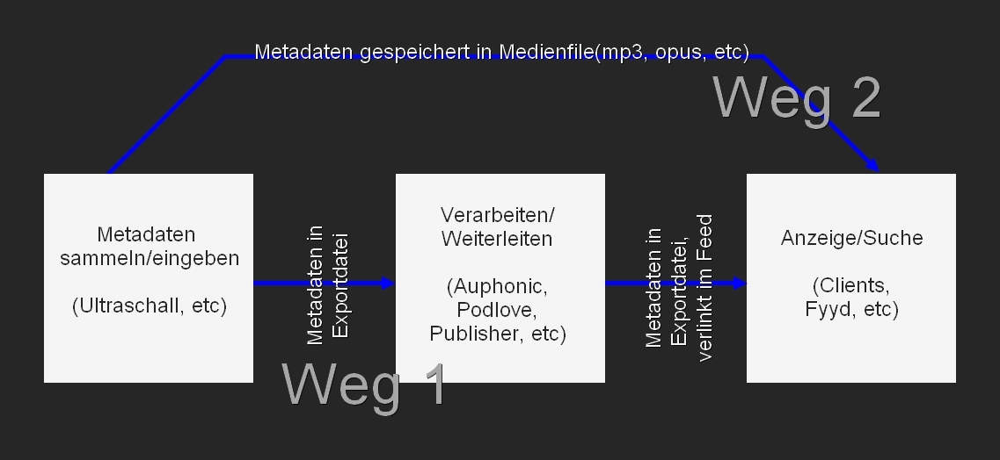

Vor ein paar Jahren hat Tim Pritlove in diversen Podcasts die Podcastzukunft skizziert. Die Idee die ihm vorschwebte war, dass Podcasts nicht nur herunterladbare Dateien sein sollten. Vielmehr sollten Podcasts auch durchsuchbar sein.
Er skizzierte eine Welt, in der man Podcasts gezielt nach Inhalten durchsuchen und wiederfinden kann.
In der Bibliothekswelt nutzt man hierfür Katalogsysteme. Man bekommt ein neues Medium(z.B. Buch, CD, DVD, eBook, Gemälde, etc), trägt zu diesem einige wichtige Infos in eine Datenbank(eben das Katalogsystem), und wenn man dieses Medium wiederfinden will, so helfen diese eingetragenen Infos dabei.
Diese Infos heißen Metadaten, da sie das Medium beschreiben und wiederauffindbar machen. Sie erlauben auch, auf systematische Art und Weise, nicht nur das Medium wieder zu finden, sondern auch Aussagen über das Medium und dessen Inhalt zu machen, dessen Beschaffenheit, etc etc.
Bibliotheken arbeiten sehr gut damit. In der Tat ist es auch unabdingbar, speziell für größere Bibliotheken, eine solche Datenbank mit sinnvollen Metadaten zu befüllen. Erst recht, wenn man mit tausenden und abertausenden Medien hantieren muss.
Podcasts sind auch Medien.
Podcasts können auch beschrieben werden.
Podcasts können auch inhaltlich eingeordnet werden.
Mit Metadaten.
Ich denke, Ihr seht so langsam, wohin die Reise gehen soll. Denn was in der Bibliothekswelt unglaublich hilfreich und unabdingar ist, das könnte auch der Podcastwelt nutzen: detaillierte Metadaten, die abgerufen und durchsucht werden können, um so Podcasts zu finden, aber auch wieder zu finden, vielleicht sogar Verlinkungen zwischen Podcasts/Episoden darzustellen und so zu zeigen, wer sich auf wen bezieht. Und zu erfahren, was inhaltlich im Podcast überhaupt vorkam, auf systematische Weise und damit von Computern automatisch auswert- und anzeigbar.
Die Vision von Tim läuft letztendlich auf eine Art von Kombination aus Datenbank, Wikipedia und Youtube hinaus:
Die Zukunft der freien Podcastlandschaft soll es ermöglichen, Podcasts inhaltlich so klar zu beschreiben, dass man zielgerichtet Podcasts findet, die man sucht und mit ihnen so flexibel arbeiten kann, als hätte man eine Wikipedia für Podcasts, welche man nur konsumieren, oder auch für Recherchen benutzen kann. Oder fürs zielgerichtete Verlinken auf Podcasts, die ein Thema noch tiefer behandeln als man es im eigenen Podcast gerade konnte.
Diese Zukunft hat jedoch ein Henne Ei Problem: Will man Podcasts nach Metadaten und Stichworten durchsuchen, so müssen diese Daten erstmal vorhanden sein.
Dazu braucht man Software, in der man die Daten eingeben kann, sonst sind diese nicht vorhanden.
Sind die Daten nicht vorhanden, baut niemand die Datenbanken, Oberflächen, Apps, etc um diese Zukunft zu ermöglichen.
Baut niemand diese Infrastruktur, so baut auch niemand Software, mit der man die Metadaten für die eigenen Podcasts angeben kann, weil wofür auch? Es wird ja nichts ausgewertet durch irgendwas da draußen.
Und damit beginnt der Kreislauf von Neuem.
Dieses Henne Ei Problem gilts zu durchbrechen. Es muss möglich sein, die Metadaten einfach einzugeben. Es muss möglich sein diese Daten weiterzugeben. Es muss möglich sein, diese Daten irgendwo anzuzeigen, dass die Podcasthörenden auch etwas davon haben. Erst mit diesen Metadaten ist es möglich, dass Apps da draußen überhaupt etwas damit anstellen können.
Und das ist der Hauptgrund für dieses neue Podcast-Metadaten-Feature, welches Euch ermöglichen wird, Metadaten für Eure Podcasts, Kapitelmarken und Shownotes zu erfassen und sauber abzuspeichern. Und Software(wie Datenbanken, Publisher oder Podcast-Clients) werden in der Lage sein, diese Infos auszulesen und angemessen anzuzeigen.
Die Zukunft des freien Podcastings beginnt. Und Ihr könnt später sagen, Ihr wart von Anfang an dabei gewesen und habt sie mitgestaltet.
Ja ok, Zukunftsvisionen sind ja schön und gut, aber was heißtn das jetzt alles eigentlich konkret?
Lasst mich Euch erzählen.
Derzeit sind Metadaten relativ reingeschränkt. Es gibt sehr viele Insellösungen, von denen die Einen das Eine können, die Anderen das Andere können, manche auch teilweise Beides aber dann nicht alles, usw. Manche Metadaten werden im Feed gespeichert, manche im MP3, wiederrum Andere im Blogbeitrag zur Episode, manche gar nicht weil keine Software das überhaupt ermöglicht. Und dieses Gewusel sorgt dafür, dass nur, wer sich richtig gut auskennt und sich die Zeit dafür nimmt, überhaupt brauchbar Metadaten anbieten kann. Und dieses Gewusel sorgt auch dafür, dass Developer_innen am Ende sich nur den Teil rauspicken, der leicht auswertbar ist und den Rest ignorieren, so dass Metadaten zwar vorhanden sind, aber dann doch am Ende im luftleeren Raum verpuffen. Oder: es ist so vorsintflutlich, dass alle das Ganze einfach so handhaben wie sie lustig sind und es mal so, mal so aussieht.
Als ein konkretes Beispiel will ich mal Shownotes heranziehen.
Diese werden von Podcast zu Podcast komplett unerschiedlich dargestellt. Manche machen saubere Listen. Manche machen Listen mit Zeitmarken an denen man die entsprechenden Stellen im Podcast anspringen könnte. Andere wiederrum schmeißen die Links einfach so unsortiert in den Blogbeitrag. Manche nutzen Tools dafür, Andere machen die per Hand.
Das führt für mich häufig zu folgender Situation:
Im Podcast wird ein Link besprochen der sich darauf bezieht, das neueste MacBooks angekündigt werden und angemerkt "packen wir in die Shownotes".
Das Thema interessiert mich und ich möchte natürlich sofort auf den Link klicken und öffne den Episodenbeitrag.
Nun strahlt mich eine unsortierte Aneinanderreihung von Links an, bei denen ich erstmal herausfinden muss, über welchen gerade gesprochen wurde.
Wenn ich Glück hab, ist im Link der Titel des verlinkten Zeitungsartikels.
Wenn ich Pech habe, war der Autor des Artikels gewitzt und nannte ihn "Holy Cow, Apple!".
Wenn ich noch viel mehr Pech habe, hat niemand im Podcast gesagt "Der Artikel heißt übrigens 'Holy Cow, Apple!'"
Dann darf ich suchen und im Extremfall jeden Link anklicken bis ich den Richtigen gefunden habe.
Was hätte mir geholfen? Zum Beispiel Zeitmarken. Ich sehe, an welcher Stelle im Podcast über den Artikel geredet wurde. Wenn es in Shownotes Zeitmarken gibt, seh ich sofort "Ahh...dieser Link wurde also besprochen an Zeitmarke 23:42" und kann ihn anklicken.
Was auch hilfreich wäre: eine kurze Beschreibung des Links, dass es um neue, angekündigte Mac-Books geht.. Mit dieser Beschreibung würde im Episodenbeitrag stehen "[Holy Cow, Apple!] - neue Mac Books angekündigt".
Oder warum nicht gleich alles zusammen:
"(23:42) [Holy Cow, Apple!] - neue Mac Books angekündigt". 'Der Grund, weshalb das aber nicht passiert ist: es ist zu aufwändig. Man muss die Zeitmarken mit aufschreiben, mit Hand. Man muss das Ganze layouten. Man muss die Links in die richtige Reihenfolge bringen. Vielleicht auch noch in HTML-Tags basteln und das ist halt schnell mühsam und aufwändig. Oder man muss sich in spezielle Software reinarbeiten, die auch wiederrum mühsam und auf ganz spezielle Art und Weise bespielt werden will und dafür muss man sich auch erstmal die Zeit nehmen, die man eventuell gar nicht hat. Und viel Copy n Paste, Copy n Paste, Copy n Paste. Also passierts kaum, schlecht oder gar nicht. Außer durch Enthusiast_innen.
Und ich muss zugeben: ich habe in der Vergangenheit genau deswegen einige Podcast-Episoden nicht veröffentlicht: Shownotes waren häufig aufwändiger als die eigentliche Episode. Oder: ich habe Shownotes gleich weggelassen um Arbeit zu sparen und zack: Podcast schlechter durchsuchbar. Und wenn ich durch die Episoden-Beiträge von vielen verschiedenen Podcasts durchschaue, seh ich sofort, es geht nicht nur mir so.
Solche komplizierteb Beispiele gibt es Viele, nicht nur für Shownotes. Es gibt sie auch für Kapitelmarken und andere Podcast-Metadaten. Man kann einige Metadaten bereits angeben, aber es ist oftmals viel Rumgeklicke, viel Handarbeit, Reinnerden in Spezialtools und Plugins, viel Wissen erfoderlich und vor allen Dingen: viel Copy n Paste.
Was man eigentlich will ist:
Wenn ich etwas in der Vergangenheit gelernt habe, dann dass jede Hürde die Wahrscheinlichkeit erhöht, dass Leute viele Dinge einfach nicht tun. Unter Anderem sinnvoll nutzbare Shownotes.
Und womit?
Mit Recht!
Wollen wir also die Metadatenzukunft haben, so beginnt sie nicht mit Tagträumereien und großen Plänen. Sie beginnt damit, dass wir das Erfassen der Metadaten so einfach wie nur irgend möglich gestalten, so dass schnell möglichst viele Metadaten da sind. Speziell Shownotes sind hierbei eine low-hanging fruit, die schon seit Jahren endlich gepflückt gehört.
Da ist bisher alles meh, aufwändig und ich bin viel zu faul und alt für den ganzen Scheiß.
Also: beginnen wir mit der Erfassung der Metadaten und machen diese leichter, als alles, was es bislang da draußen gibt. Und danach machen wir das Nutzen und Anzeigen der Metadaten leichter, als alles, was es bislang da draußen gibt.
Und so sieht mein Plan aus.
Um zu beschreiben, was ich in Ultraschall vor habe, muss ich kurz skizzieren, was mit den Metadaten überhaupt passieren soll, wenn sie exportiert werden.
Alles beginnt damit, die Daten in Ultraschall einzugeben(dazu später mehr). Hat man die Daten eingegeben, so exportiert man sie. In der Hauptsache wird das auf zwei Wegen geschehen:
In der folgenden Grafik seht Ihr die beiden Wege grob skizziert:

Das exportierte Metadaten-File kann nun an den Podlove-Publisher gegeben werden(irgendwann in der Zukunft natürlich). Dieser kann die Metadaten automatisch aus dem Metadaten-File lesen und alles schonmal automatisch eintragen. Im günstigsten Fall müsst Ihr dann nur noch auf Publish klicken um die Episode zu veröffentlichen oder geringe Anpassungen machen(in Bereichen, die in Ultraschall nicht sinnvoll erfasst werden können.) Ihr merkt: kein Copy n Paste mehr, sondern einmal die Daten in Ultraschall eingeben und dann einfach nur weitergeben an, in diesem Fall, den Publisher. Oder Auphonic.
Der Publisher gibt diese Datei dann weiter per Feed. Da arbeite ich noch an Details, aber die Grundidee wird sein, dass es, zusätzlich zum Enclosure-Tag(welches auf Euer MP3-File verweist) auch noch ein weiteres Enclosure-Tag gibt, welches auf die Metadaten-Datei verweist.
Podcastclients oder Podcast-Datenbanken wie Fyyd können nun die Metadatendatei im Feed finden und sich gezielt runterladen und deren Inhalte speichern/anzeigen. Als Beispiel für eine solche Anzeige, kann ein Podcast-Client die Shownotes in die Liste von Kapitelmarken einbetten: Man kann also zu einem Kapitel die Shownotes "ausklappen" und sieht so, welche Shownotes zu diesem Kapitel gehören. Mit Zeitmarken. Und dann klickt man einfach auf den "Link im Browser öffnen"-Button. Also kein Durchsuchen von Episodenbeiträgen mehr.
Das heißt also, Ihr könnt die noch nicht heruntergeladenen Episoden eines Podcasts gezielt durchsuchen, weil alle Metadaten zur Verfügung stehen, obwohl die Episode nicht heruntergeladen wurde. Und wenn die Episode heruntergeladen wurde, kann der Client die Shownotes/Kapitelmarken/Metadaten entsprechend für Euch visualisieren, so dass Ihr sie sofort bei der Hand habt. Und Datenbanken, wie Fyyd, können diese Daten auch herunterladen um Podcasts gezielt durchsuchbarer zu machen, bis hin zu Dingen wie "Diese Podcasts haben Link xyz besprochen, möchtest Du diese Podcasts Dir anhören?".
Kurzer Abschweif:
Wenn Ihr Euch nun fragt, weshalb landen die Metadaten nicht direkt im Feed sondern in einer Extra-Datei? (könnt Ihr überspringen, wenn Ihr mögt).
Zum Einen ändern sich Metadaten nicht so häufig. Wenn die Metadaten als Datei vorliegen, so lädt man sie nur so oft runter, wie man sie braucht:
Da Metadaten sehr groß werden können, blähen sie schnell einen Feed auf. Was mehr Traffic bedeutet. Für jede Feedaktualisierung eines jeden Hörenden. Und damit den Podcastserver lahmlegen kann. Diese in einer gesonderten Datei zu haben und wirklich nur herunterzuladen wenn notwendig ist praktischer auf allen Ebenen.
Und, es ist leichter die Metadaten zu backuppen. Wer schonmal versucht hat, Daten aus einem Feed oder einer Datenbank zu backuppen oder zu rekonstruieren hat sicherlich ein Trauma davon zurückbehalten. Bei externen Metadaten-Dateien: einfach die Metadaten-Dateien in die Cloud packen. Und wenn einem die Podcastinstallation abraucht: alle PodcastMetadatenDateien neu hochladen, Podlove eine Liste geben wo diese zu finden sind und Podlove kann ruckzuck alles wieder automatisch einrichten und der Podcast ist innerhalb kürzester Zeit wieder online mit allen Metadaten, Shownotes, Kapiteln, etc.
Macht das mal mit Podcastfeeds!
Abschweif Ende
Nun können wir nicht erwarten, dass alle Publisher-Systeme die Metadaten-Datei weiterreichen oder unterstützen wollen. Heißt das nun, dass Metadaten in Ultraschall versauern könnten, wenn Publisher die nicht nutzen/weiterleiten wollen? Mitnichten. Der zweite Weg verfolgt daher den Ansatz, die Metadaten nicht über den Publisher, sondern zusätzlich auch direkt im MediaFile zu transportieren. Das heißt nichts Anderes als: die Inhalte der MetaDaten-Datei werden beim Rendern zusätzlich direkt ins ID3-Tag des MP3s geschrieben und können dort ausgelesen werden. Ein Ansatz, der für Kapitelmarkenbilder auch schon erfolgreich ist. Das heißt, dass Podcastclients, zumindest von heruntergeladenen Episoden, die kompletten Metadaten, Shownotes, Kapitelmarken, etc bekommen können, egal ob der Publisher diese direkt zum Download anbietet.
Ja aber, wenn ein Publisher die Metadaten-Datei nicht annimmt und importiert, dann bedeutet das ja, dass man doch wieder alles per Hand schreiben muss, richtig?
Den Beitrag?
Die Shownotes?
Nope, denn damit Ihr nicht trotzdem alles copy n pasten müsst, könnt Ihr Euch den Episodenbeitrag mit sinnvollem Layout direkt in Ultraschall exportieren und nur das einmal copy n pasten. Und nutzt Ihr einen Publisher, der z.B. keine Shownotes kann, aber Euch HTML-Anzeige ermöglicht, so könnt Ihr den HTML-Code für eine Liste an Shownotes leicht exportieren und müsst diese nur copy'n'pasten in den Beitrag Eurer Podcastepisode. Mit Zeitmarken und Linkbeschreibungen. Mit Aufteilung in Kapitel. Also nichts mehr mit händisch layouten.
Ihr seht also, egal, was passiert: es wird zumindest ordentliche Shownotes geben. Und die Metadaten erreichen den Podcastclient. Und wenn es genug Podcasts gibt, die Metadaten angeben und ausliefern und das Meiste davon automagisch passiert, ohne dass Ihr als Podcastproduzent_innen da was groß dafür tun müsst, dann haben wir die eine Hälfte des Henne-Ei Problems bereits gelöst: es gibt Metadaten. Ab dann lohnt es sich auch für App-Entwickelnde, Datenbankbetreibende und ToolDeveloper_innen aus den Metadaten was Brauchbares zu machen, denn sie haben viel, mit dem man arbeiten kann.
Und sollte, wider Erwarten, nichts davon irgendwo ankommen: so habt Ihr wenigstens das Layout-Problem für Shownotes von der Backe.
(Kleiner Hinweis noch: es gibt da draußen, wie gesagt, bereits die ein oder andere Insellösung, wohl auch für Shownotes. Dafür einen Export, so dass Ihr nur schnell eine Datei importieren müsst, ist an sich trivial in Ultraschall nachzubauen. Sofern das Tool und das Importformat dafür sauber dokumentiert ist. Falls Ihr da bereits etwas nutzt, gebt gern Bescheid, damit wir das auch gleich supporten können.)
Weiter gehts im Kapitel Für Testende